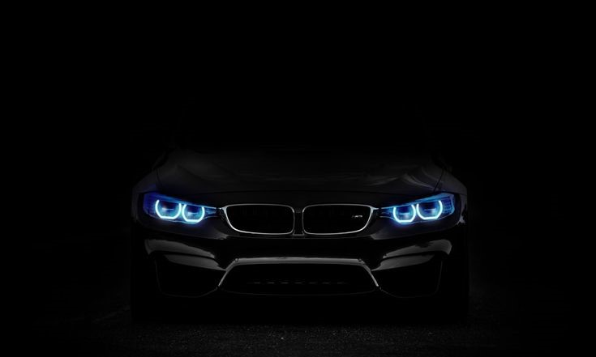

BMW Unveils Next-Generation Electric Vision for 2025
-
BMW has once again set a new benchmark in the automotive world with the unveiling of its next-generation electric lineup.
-
BMW continues to strengthen its global presence by expanding its lineup and investing in future-ready technologies.
By Muhammad Bilal Attari
BMW has once again set a new benchmark in the automotive world with the unveiling of its next-generation electric lineup. During a recent event in Munich, the German automaker showcased its latest innovation under the Neue Klasse concept, signaling a bold transformation toward a fully electric future. According to BMW officials, the new platform will power a range of upcoming models, including the redesigned BMW i3 Sedan and the iX3 SUV, both expected to hit global markets by mid-2026. The vehicles promise longer range, faster charging times, and enhanced digital integration. “BMW is shaping the mobility of tomorrow with a clear focus on sustainability and driving pleasure,” said Oliver Zipse, Chairman of the BMW Group. “The Neue Klasse represents more than just a new vehicle generation — it’s a new era in automotive design, production, and innovation.” The company’s engineers have integrated next-level battery technology that offers up to 30 percent more range and 25 percent faster charging compared to the current models. Inside, BMW’s futuristic “Panoramic Vision” display replaces traditional dashboards, giving drivers a full-width digital interface that projects critical information onto the windshield. BMW also announced plans to expand its fully electric lineup to 15 models by 2027, reaffirming its commitment to sustainability. Meanwhile, production of these vehicles will be carried out in BMW’s new high-tech plant in Debrecen, Hungary — a facility designed to operate entirely on renewable energy. Industry analysts predict that this move will strengthen BMW’s position in the global EV market, where competition with Tesla, Mercedes-Benz, and Audi continues to intensify. With its combination of performance, luxury, and cutting-edge design, BMW’s latest innovation ensures that “The Ultimate Driving Machine” will continue to lead — now with zero emissions.

BMW M5 CS
As part of its broader strategy, BMW is also investing heavily in artificial intelligence and autonomous driving technologies. The company revealed that its next generation of vehicles will feature adaptive learning systems capable of analyzing driver behavior, optimizing energy use, and providing predictive maintenance alerts. These advancements are expected to redefine the way drivers interact with their cars, creating a seamless connection between human intuition and machine intelligence. In addition to technological progress, BMW is reinforcing its commitment to environmental responsibility.
The automaker has announced that all new factories will operate on 100% renewable energy by 2030, while the materials used in production — such as aluminum, steel, and leather alternatives — will be sourced from certified sustainable suppliers. This approach aligns with BMW’s vision of achieving full climate neutrality across its entire value chain.
Moreover, BMW’s design philosophy continues to evolve. The latest models feature minimalist interiors, ambient lighting, and advanced voice control systems, creating a cabin experience that feels both futuristic and personal. The combination of luxury, performance, and innovation once again places BMW at the forefront of the modern automotive landscape.
BMW continues to strengthen its global presence by expanding its lineup and investing in future-ready technologies. During recent events, company officials confirmed that several new electric and hybrid models are already under development, all designed with improved battery range, advanced infotainment, and next-level safety systems. These vehicles will feature BMW’s signature handling combined with efficient powertrains, ensuring that driving pleasure and sustainability go hand in hand. The automaker’s engineers are also working on innovative lightweight materials that improve performance while reducing overall emissions. To further enhance customer experience, BMW plans to roll out connected services that allow drivers to control, monitor, and update their vehicles remotely through cloud-based systems. With production sites in Germany, Hungary, and Mexico now focusing on the Neue Klasse architecture, BMW aims to increase efficiency and reduce manufacturing costs. Experts believe this global approach will help the company maintain its position as a pioneer in the luxury automotive market. Through constant innovation and an unshakable commitment to excellence, BMW is confidently driving toward a new era of performance, intelligence, and sustainability.BMW continues to strengthen its global presence by expanding its lineup and investing in future-ready technologies. During recent events, company officials confirmed that several new electric and hybrid models are already under development, all designed with improved battery range, advanced infotainment, and next-level safety systems. These vehicles will feature BMW’s signature handling combined with efficient powertrains, ensuring that driving pleasure and sustainability go hand in hand. The automaker’s engineers are also working on innovative lightweight materials that improve performance while reducing overall emissions. Moreover, BMW’s design philosophy continues to evolve. The latest models feature minimalist interiors, ambient lighting, and advanced voice control systems, creating a cabin experience that feels both futuristic and personal. The combination of luxury, performance, and innovation once again places BMW at the forefront of the modern automotive landscape.
BMW Picked
BMW ek aisi automobile company hai jo duniya bhar mein apni luxury cars, powerful performance aur modern design ke liye mashhoor hai. Germany mein 1916 mein establish hui ye company aaj global level par premium vehicles ka symbol ban chuki hai. BMW har saal naye models aur technology ke zariye apne customers ko ek behtareen driving experience deti hai. Company ka focus sirf speed aur style tak limited nahi balki sustainability aur innovation par bhi hai. Aaj BMW electric vehicles ki race mein bhi aage badh rahi hai, jahan unke i Series models jaise BMW i4, iX3, aur i7 ne automobile market mein nayi pehchaan banayi hai. BMW ke engineers advanced battery systems, digital cockpit displays aur smart driving features par kaam kar rahe hain jisse vehicles zyada safe aur intelligent ban rahe hain. Company ne apne production plants mein renewable energy ka use shuru kar diya hai taake carbon emission kam ho aur environment par asar na pade. Performance ke saath saath design par bhi BMW ka focus hamesha se raha hai — har car ek perfect balance hoti hai power, comfort, aur innovation ka. Aaj ke daur mein jab har brand electric future ki taraf badh raha hai, BMW apni technology aur craftsmanship ke dum par “The Ultimate Driving Machine” ke title ko aur mazboot kar rahi hai.